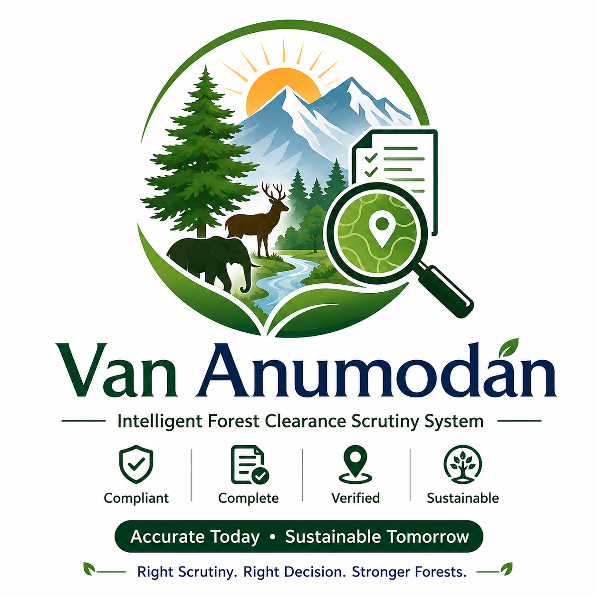

Proposal Dashboard
Set up a proposal to begin evidence-linked scrutiny of a PARIVESH forest-diversion package.

Module compliance
Open critical issues
Proposal & applicability
Proposal identity drives the dynamic checklist. Applicability flags activate conditional controls; anything left applicable stays unresolved until an officer disposes of it — no silent assumptions.
Documents
Upload the proposal files together — the app sorts them by type and automatically reads the machine-readable ones (KML/KMZ area, spreadsheets, Word, digital PDFs), pre-fills the reconciliation grid and lists what still needs manual reading. Scanned or photographed pages have no text inside them and must be read by you (or processed by the Phase II back-end OCR).
Uploaded documents
Figures found
Scrutiny checklist
Set each applicable control. Critical controls block a Ready verdict until resolved. Overrides need a speaking order and are barred on statutory stop conditions.
Area reconciliation
Every source value is diffed against the PARIVESH portal area. A difference beyond tolerance is a critical mismatch and a stop condition.
Compensatory afforestation registry
Parcel-level CA verification: ownership, area match, suitability, encumbrance and overlap against previously committed CA land.
GIS & spatial checks
Validate geometry, area, jurisdiction and intersections with protected areas, ESZ, tiger reserve/CTH and corridors using approved authoritative layers.
Run spatial check
Cross-document reconciliation
Material facts compared across portal, application, DFO/SIR, CF, Nodal and GIS. Fill values to surface mismatches.
Red flags
Auto-raised from unresolved critical/major controls, plus manual flags. Close a flag with resolution evidence to lift the block.
Reports & case file
Generate the executive scrutiny report and deficiency memo, or export the full case as a portable file.
Rules & guidelines library
Version-controlled legal sources. Link each rule to its Act/clause, effective date and supersession so checklist findings carry an auditable legal basis before production use.
Assisted rule intake
Pull an Act, Rule or amendment into a draft rule row. Extraction only pre-fills the fields — you review, correct and approve before it enters the library. Nothing is fetched from the open web on its own.
The library loads from rules.json published beside the app. To push an amendment, edit rules.json (or use “Add rule” then “Export rules.json”), commit it in Working Copy and push — installed devices pick up the new version on their next online launch. Machine-readable rules should be approved by the designated Rule Approver / competent authority before they gate any decision. This library is the source register for that governance.